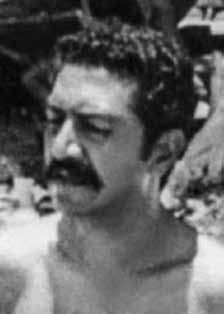

Caiupy
Alves
de Castro
CIRCUNSTÂNCIAS DA MORTE
Caiuby Alves de Castro vivia em situação legal no Rio de Janeiro e foi visto pela última vez no dia 21 de novembro de 1973, às 19h, em Copacabana.
De acordo com o depoimento de sua esposa, Marli Paes Leme, disponível no livro “Dossiê Ditadura”: “Tomamos um ônibus da linha circular Glória–Leblon, no início da [rua] Barata Ribeiro, em Copacabana, e, quando chegamos na altura da Galeria Menescal, Caiuby puxou a cigarra e desceu. Antes, me confidenciara um encontro rápido com um amigo, mas garantiu que voltaria logo. Pediu-me, inclusive, que não mudasse a roupa ao chegar em casa, pois iríamos juntos ao cinema. Esperei e nada do Caiuby. […] meu marido tinha desaparecido.”
Marli percorreu os hospitais da cidade e chegou a ir ao próprio DOPS, mas nada encontrou. Ela ainda pediu a generais conhecidos por informações sobre seu marido, mas não obteve êxito. Nenhum órgão de segurança assumiu a prisão de Caiuby. Ela ainda tentou fazer um anúncio em jornais diários pedindo pistas sobre o destino de Caiuby, mas enfrentou a recusa destes meios de comunicação. Segundo Marli, somente depois de muita procura, ela conseguiu colocar um anúncio por dois dias, no Diário de Notícias, mas nenhuma nova informação surgiu. Sua saga em busca do paradeiro do marido pode ser observada em seu relato presente na publicação “Desaparecidos Políticos”. O nome de Caiuby constou em uma nota do ministro da Justiça Armando Falcão, de fevereiro de 1975, emitida em resposta às denúncias feitas em 1974 pela Comissão de Familiares de Mortos e Desaparecidos Políticos e por D. Paulo Evaristo Arns, sobre 22 desaparecidos políticos.
De acordo com a nota apresentada, Caiuby era identificado como “militante comunista, detido pelo DOPS-GB, em maio de 1968, participando de agitações de rua. Foi posto em liberdade após prestar declarações. Encontra-se desaparecido”. Analisando os documentos da CONADEP e do Arquivo Nacional no Brasil, foi possível associar o desaparecimento do brasileiro Caiuby Alves de Castro ao de militantes vindos da Argentina: Antonio Luciano Pregoni e Jean Henri Raya Ribard, que desapareceram no mesmo dia.
A Galeria Menescal, mencionada no depoimento de Marli, localiza-se entre as ruas Santa Clara e Figueiredo Magalhães, no bairro de Copacabana, a poucos metros de onde se encontravam Jean Henri Raya Ribard e Antonio Luciano Pregoni, que desapareceram na mesma data que Caiuby. Vinham da Argentina e, de acordo com a esposa de Jean, Mabel Bernis, estavam hospedados na Avenida Atlântica, nº 3150, apartamento 204, Copacabana. Em depoimento à CNV, realizado em 8 de abril de 2014, na cidade argentina de Río Ceballos, na província de Córdoba, o argentino Julio Cesar Robles, que participou de diversas iniciativas de insurgência da resistência peronista nas décadas de 1950 e 1960, afirmou que Jean Henri Raya Ribard, Antonio Luciano Pregoni e outro argentino conhecido pelo apelido de “El Salteño”, que acredita ser Antonio Graciani, teriam ido ao Brasil em novembro de 1973, possivelmente na companhia de um dos brasileiros que integravam o grupo de Cerveira e de outro cidadão de nacionalidade chilena.
Jean Henri Raya Ribard e Antonio Luciano Pregoni tinham contatos em comum com o ex-major do Exército brasileiro, Joaquim Pires Cerveira. Ele era amigo de Caiuby e desapareceu na Argentina em 5 de dezembro de 1973, juntamente com João Batista Rita, sendo vistos pela última vez em janeiro de 1974 no Destacamento de Operações de Informações – Centro de Operações de Defesa Interna (DOI-CODI) da rua Barão de Mesquita, no bairro da Tijuca (RJ). Havia relações em comum entre Cerveira e os argentinos, mantidas com Abraham Guillén, combatente da Guerra Civil Espanhola (1936-1939) que se refugiou na França durante a Segunda Guerra Mundial, onde conheceu e se tornou amigo do pai de Jean Henri Raya Ribard. Guillén mudou-se para a América Latina nos anos 1950 e forneceu orientações para organizações brasileiras no exílio, tais como a FLN (Frente de Libertação Nacional), liderada por Cerveira. Foi também importante influência entre os Tupamaros, organização na qual Antonio Pregoni era militante, tal como exposto em audiência pública de 11 de outubro de 2013, organizada pela CNV e pela Comissão Estadual Rubens Paiva, em São Paulo.
O principal documento que explica esta relação é um dossiê do Ministério das Relações Exteriores, encontrado no Arquivo Nacional, com mais de 800 páginas sobre as atividades de Alberto Conrado Avegno (que usava o codinome Altair), um brasileiro que vivia no Uruguai e era agente do serviço secreto do Itamaraty e do Cenimar (Centro de Informações da Marinha). Nele, consta que a argentina Alicia Eguren, poeta, escritora e militante da esquerda peronista, era outro vínculo que ligava Joaquim Pires Cerveira a um grupo de jovens militantes de esquerda, entre eles Jean Henri Raya Ribard e Antonio Luciano Pregoni.
Em junho de 2014, a Comisión Provincial de la Memoria (Argentina) disponibilizou à CNV o relatório “Víctimas del Terrorismo de Estado” que reúne documentos sobre o desaparecimento de onze cidadãos brasileiros na Argentina e de seis argentinos no Brasil, encontrado no Arquivo da DIPBA (Dirección de Inteligencia de la Policia de la Provincia de Buenos Aires). Os documentos comprovam a coordenação entre os países para a captura do amigo de Caiuby, Joaquim Pires Cerveira, já que o ingresso do major na Argentina foi informado pela Polícia Federal brasileira em 28 de novembro de 1973, poucos dias antes de seu desaparecimento.
Caiuby Alves de Castro lived legally in Rio de Janeiro and was last seen on November 21, 1973, at 7 pm, in Copacabana.
According to the testimony of his wife, Marli Paes Leme, available in the book “Dossiê Ditadura”: “We took a bus on the Glória–Leblon circular line, at the beginning of [street] Barata Ribeiro, in Copacabana, and, when we arrived at Galeria Menescal, Caiuby pulled out the buzzer and got out. Before, he had confided in me about a quick meeting with a friend, but he assured me that he would be back soon. He even asked me, I didn’t change my clothes when I got home, because we were going to the cinema together. I waited and nothing about Caiuby […] my husband had disappeared.”
Marli visited the city's hospitals and even went to the DOPS itself, but found nothing. She even asked well-known generals for information about her husband, but was unsuccessful. No security agency took charge of Caiuby's arrest. She even tried to make an announcement in daily newspapers asking for clues about Caiuby's fate, but faced refusal from these media outlets. According to Marli, only after much searching was she able to place an ad for two days in Diário de Notícias, but no new information emerged. Her saga in search of her husband's whereabouts can be seen in her report in the publication “Desaparecidos Políticos”. Caiuby's name appeared in a note from the Minister of Justice Armando Falcão, dated February 1975, issued in response to complaints made in 1974 by the Commission of Relatives of Political Dead and Missing Persons and by D. Paulo Evaristo Arns, regarding 22 missing politicians.
According to the note presented, Caiuby was identified as a "communist militant, detained by the DOPS-GB, in May 1968, participating in street unrest. He was released after giving statements. He is missing." Analyzing documents from CONADEP and the National Archives in Brazil, it was possible to associate the disappearance of Brazilian Caiuby Alves de Castro with that of militants from Argentina: Antonio Luciano Pregoni and Jean Henri Raya Ribard, who disappeared on the same day.
The Menescal Gallery, mentioned in Marli's statement, is located between Santa Clara and Figueiredo Magalhães streets, in the Copacabana neighborhood, a few meters from where Jean Henri Raya Ribard and Antonio Luciano Pregoni were, who disappeared on the same date as Caiuby. They came from Argentina and, according to Jean's wife, Mabel Bernis, they were staying at Avenida Atlântica, nº 3150, apartment 204, Copacabana. In a statement to the CNV, held on April 8, 2014, in the Argentine city of Río Ceballos, in the province of Córdoba, the Argentine Julio Cesar Robles, who participated in several insurgency initiatives of the Peronist resistance in the 1950s and 1960s, stated that Jean Henri Raya Ribard, Antonio Luciano Pregoni and another Argentine known by the nickname “El Salteño”, who he believes to be Antonio Graciani, would have gone to Brazil in November 1973, possibly in the company of one of the Brazilians who were part of Cerveira's group and another citizen of Chilean nationality.
Jean Henri Raya Ribard and Antonio Luciano Pregoni had contacts in common with the former major of the Brazilian Army, Joaquim Pires Cerveira. He was a friend of Caiuby and disappeared in Argentina on December 5, 1973, together with João Batista Rita, being last seen in January 1974 at the Information Operations Detachment – Internal Defense Operations Center (DOI-CODI) on Rua Barão de Mesquita, in the neighborhood of Tijuca (RJ). There were common relationships between Cerveira and the Argentines, maintained with Abraham Guillén, a combatant in the Spanish Civil War (1936-1939) who took refuge in France during the Second World War, where he met and became friends with Jean Henri Raya Ribard's father. Guillén moved to Latin America in the 1950s and provided guidance to Brazilian organizations in exile, such as the FLN (National Liberation Front), led by Cerveira. He was also an important influence among the Tupamaros, an organization in which Antonio Pregoni was a militant, as explained in a public hearing on October 11, 2013, organized by the CNV and the Rubens Paiva State Commission, in São Paulo.
The main document that explains this relationship is a dossier from the Ministry of Foreign Affairs, found in the National Archives, with more than 800 pages on the activities of Alberto Conrado Avegno (who used the code name Altair), a Brazilian who lived in Uruguay and was an agent of the Itamaraty and Cenimar (Navy Information Center) secret service. It states that the Argentine Alicia Eguren, poet, writer and activist of the Peronist left, was another link that linked Joaquim Pires Cerveira to a group of young left-wing activists, including Jean Henri Raya Ribard and Antonio Luciano Pregoni.
In June 2014, the Comisión Provincial de la Memoria (Argentina) made available to the CNV the report “Víctimas del Terrorismo de Estado” which brings together documents on the disappearance of eleven Brazilian citizens in Argentina and six Argentines in Brazil, found in the DIPBA Archive (Dirección de Inteligencia de la Policia de la Provincia de Buenos Aires). The documents prove coordination between the countries for the capture of Caiuby's friend, Joaquim Pires Cerveira, since the major's entry into Argentina was reported by the Brazilian Federal Police on November 28, 1973, a few days before his disappearance.
Caiuby Alves de Castro vivía legalmente en Río de Janeiro y fue vista por última vez el 21 de noviembre de 1973, a las 19 horas, en Copacabana.
Según el testimonio de su esposa, Marli Paes Leme, disponible en el libro “Dossiê Ditadura”: “Tomamos un autobús en la línea circular Glória-Leblon, al inicio de [la calle] Barata Ribeiro, en Copacabana, y cuando llegamos a la Galería Menescal, Caiuby tocó el timbre y se bajó. Antes, me había confiado un encuentro rápido con un amigo, pero me aseguró que volvería pronto. Incluso preguntó yo no me cambié de ropa cuando llegué a casa, porque íbamos juntos al cine esperé y nada de Caiuby […] mi marido había desaparecido”.
Marli visitó los hospitales de la ciudad e incluso acudió al propio DOPS, pero no encontró nada. Incluso pidió a generales conocidos información sobre su marido, pero no tuvo éxito. Ningún organismo de seguridad se hizo cargo de la detención de Caiuby. Incluso intentó hacer un anuncio en los diarios pidiendo pistas sobre el destino de Caiuby, pero se encontró con el rechazo de estos medios. Según Marli, sólo después de mucha búsqueda pudo publicar un anuncio durante dos días en el Diário de Notícias, pero no surgió ninguna información nueva. Su saga en busca del paradero de su marido se puede ver en su reportaje en la publicación “Desaparecidos Políticos”. El nombre de Caiuby apareció en una nota del Ministro de Justicia Armando Falcão, de febrero de 1975, emitida en respuesta a denuncias realizadas en 1974 por la Comisión de Familiares de Políticos Muertos y Desaparecidos y por D. Paulo Evaristo Arns, sobre 22 políticos desaparecidos.
Según la nota presentada, Caiuby fue identificado como un "militante comunista, detenido por el DOPS-GB, en mayo de 1968, participando en disturbios callejeros. Fue puesto en libertad tras prestar declaraciones. Está desaparecido". Analizando documentos de la CONADEP y del Archivo Nacional de Brasil, fue posible asociar la desaparición del brasileño Caiuby Alves de Castro con la de los militantes argentinos Antonio Luciano Pregoni y Jean Henri Raya Ribard, desaparecidos el mismo día.
La Galería Menescal, mencionada en el comunicado de Marli, está ubicada entre las calles Santa Clara y Figueiredo Magalhães, en el barrio de Copacabana, a pocos metros de donde se encontraban Jean Henri Raya Ribard y Antonio Luciano Pregoni, desaparecidos en la misma fecha que Caiuby. Procedían de Argentina y, según la esposa de Jean, Mabel Bernis, se hospedaban en la Avenida Atlântica, nº 3150, departamento 204, Copacabana. En una declaración ante la CNV, realizada el 8 de abril de 2014, en la ciudad argentina de Río Ceballos, en la provincia de Córdoba, el argentino Julio César Robles, quien participó en varias iniciativas insurgentes de la resistencia peronista en las décadas de 1950 y 1960, afirmó que Jean Henri Raya Ribard, Antonio Luciano Pregoni y otro argentino conocido con el sobrenombre de “El Salteño”, que cree que es Antonio Graciani, habrían ido a Brasil en noviembre de 1973, posiblemente en compañía de uno de los brasileños que formaban parte del grupo de Cerveira y otro ciudadano de nacionalidad chilena.
Jean Henri Raya Ribard y Antonio Luciano Pregoni tenían contactos en común con el ex mayor del ejército brasileño, Joaquim Pires Cerveira. Era amigo de Caiuby y desapareció en Argentina el 5 de diciembre de 1973, junto con João Batista Rita, siendo visto por última vez en enero de 1974 en el Destacamento de Operaciones de Información – Centro de Operaciones de Defensa Interna (DOI-CODI), en la Rua Barão de Mesquita, en el barrio de Tijuca (RJ). Existieron relaciones comunes entre Cerveira y los argentinos, mantenidas con Abraham Guillén, un combatiente de la Guerra Civil Española (1936-1939) que se refugió en Francia durante la Segunda Guerra Mundial, donde conoció y trabó amistad con el padre de Jean Henri Raya Ribard. Guillén se mudó a América Latina en la década de 1950 y brindó orientación a organizaciones brasileñas en el exilio, como el FLN (Frente de Liberación Nacional), liderado por Cerveira. También tuvo una importante influencia entre los Tupamaros, organización en la que Antonio Pregoni militaba, como se explicó en una audiencia pública el 11 de octubre de 2013, organizada por la CNV y la Comisión Estatal Rubens Paiva, en São Paulo.
El principal documento que explica esta relación es un dossier del Ministerio de Relaciones Exteriores, encontrado en el Archivo Nacional, con más de 800 páginas sobre las actividades de Alberto Conrado Avegno (que usaba el nombre clave Altair), un brasileño que vivía en Uruguay y era agente del servicio secreto Itamaraty y Cenimar (Centro de Información de la Marina). Se afirma que la argentina Alicia Eguren, poeta, escritora y activista de la izquierda peronista, fue otro vínculo que vinculó a Joaquim Pires Cerveira con un grupo de jóvenes militantes de izquierda, entre ellos Jean Henri Raya Ribard y Antonio Luciano Pregoni.
En junio de 2014, la Comisión Provincial de la Memoria (Argentina) puso a disposición de la CNV el informe “Víctimas del Terrorismo de Estado” que reúne documentos sobre la desaparición de once ciudadanos brasileños en Argentina y seis argentinos en Brasil, que se encuentran en el Archivo DIPBA (Dirección de Inteligencia de la Policía de la Provincia de Buenos Aires). Los documentos prueban la coordinación entre los países para la captura del amigo de Caiuby, Joaquim Pires Cerveira, ya que el ingreso del mayor a la Argentina fue informado por la Policía Federal de Brasil el 28 de noviembre de 1973, pocos días antes de su desaparición.